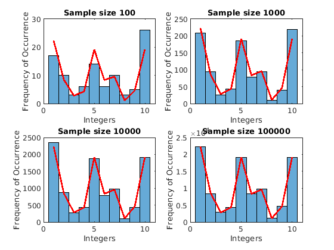

Contents
clear; close all; clc;
a)
From a randomly defined pdf (p) of length n, first a cdf is created inside the function randp. It then draws random values from uniform distribution and then computes the samples by checking for the cdf values with probabilities greater than the randomly selected value. This method of sampling is called inverse transform sampling.
p = rand(10, 1); % Random vector of length n p = p/sum(p); % Normalize the vector to create a pdf samp_size = 1000; % Define the sample size that is desired samples = randp(p, samp_size); % Use the randp function to draw samples from the defined pdf fig1 = figure(); histogram(samples, 'DisplayName', 'sample dist'); hold on; plot(p * samp_size, 'r-', 'LineWidth', 2, 'DisplayName', 'pdf') xlabel('Integers') ylabel('Frequency of Occurrence') legend('Location', 'northwest'); title('Randomly drawn sample and pdf')

Here the sample size is varied and samples are drawn from the same pdf but with different sample sizes using the defined randp function
samp_sizes = [10^2, 10^3, 10^4, 10^5]; % Sample sizes fig2 = figure(); for i = 1:4 samp_size = samp_sizes(i); samples = randp(p, samp_size); % Draw samples from the same pdf p and different sample sizes % Plot the new sample and the pdf subplot(2, 2, i); histogram(samples, 'DisplayName', 'sample dist'); hold on; plot(p * samp_size, 'r-', 'LineWidth', 2, 'DisplayName', 'pdf') title(sprintf('Sample size %d', samp_size)); xlabel('Integers') ylabel('Frequency of Occurrence') end
We can see that as the sample size increases, the sample drawn fits the pdf better i.e. the sample distribution converges to pdf as the sample size is increased.
b)
psum function computes a combined pdf r from p and q which maps the probabilities on the range defined by the sum of p and q. It is done by convolving p and q. Since convolution in signal domain is multiplication in the Fourier domain, r can be obtained as the real part of the inverse Fourier Transform of the product of the Fourier Transforms of p and q.
p_size = randi([2, 20], 1); % Randomly define the size of p q_size = randi([2, 30], 1); % Randomly define the size of q p = rand(p_size, 1); p = p/sum(p); % Create a pdf p q = rand(q_size, 1); q = q/sum(q); % Create a pdf q r = psum(p, q);
Initialize p: storing the probability of getting each number on its face in a die roll. Then we compute the combined pdf of rolling N die by convolving p with itself N times. We can also draw samples by calling randp with pdf = p and adding it to the previously drawn sample from randp with pdf = p and repeat this N - 1 times.
p = [1:6]/sum(1:6); % Rolling of a die probability samp_size = 1000; samp_r = zeros(samp_size, 1); % Initilaizing samples n_rolls = 4; % Defining the number of rolls to be drawn for i = 1:n_rolls if i == 1 r = p; % Initilalize r to be p for just 1 run of the die else r = psum(r, p); % Compute r by convolving r with p end samp_r = samp_r + randp(p, samp_size); % Draw samples with pdf p in each loop and add it to the samples. end fig3 = figure(); histogram(samp_r, 'DisplayName', 'sample dist'); hold on; plot(r * samp_size, 'r-', 'LineWidth', 2, 'DisplayName', 'pdf'); xlabel('Sum of rolls') ylabel('Frequency of Occurrence') legend('Location', 'northwest');
Computing samples from randp for different sample sizes
samp_sizes = [10^2, 10^3, 10^4, 10^5]; % Range of sample sizes fig4 = figure(); for i = 1:4 samp_size = samp_sizes(i); samp_r = zeros(samp_size, 1); % Initialize sample array for j = 1:n_rolls samp_r = samp_r + randp(p, samp_size); % Add samples drawn from randp to previously drawn sample end subplot(2, 2, i); histogram(samp_r, 'DisplayName', 'sample dist'); hold on; plot(r * samp_size, 'r-', 'LineWidth', 2, 'DisplayName', 'pdf') title(sprintf('Sample size %d', samp_size)); xlabel('Integers') ylabel('Frequency of Occurrence') end

We can again see that as the sample size increases, the samples drawn match the pdf more closely.
Note: For some reason publishing the file does not produce fig4 in the html.
However, the figure is produced on running and is uploaded to the drive as Q2_04.png
Functions
function samples = randp(p, num) % The function randp computes the samples from the pdf defined by p and % the sample size num. This is done by first computing the cdf from the % pdf. The samples are then drawn by choosing a random value from % uniform distribution and checking where the randomly drawn value lies % on the cdf that is computed. cdf_p = zeros(size(p)); % Initialize cdf cdf_p(1) = p(1); % The first value of cdf is the first value of pdf for i = 2:length(p) cdf_p(i) = p(i) + cdf_p(i-1); % The i_th value of cdf is the sum of first i-1 values of pdf end samples = zeros(num, 1); % Initialize samples rand_probs = rand(num, 1); % Draw random probabilities from uniform distribution for i = 1:num samples(i) = find(cdf_p > rand_probs(i), 1 ); % Use inverse sampling to draw samples from the given pdf p end end function r = psum(p, q) % psum computes the probability distribution function (pdf) r i.e. % defined for the sum of the samples drawn from p (size m) and the samples drawn % from q (size n). Since r is defined for the sum of the samples drawn, % it is of length m + n. Also the smallest value for r is going to be 2 % and hence the probability of 1 in r is 0. r is computed as a % convolution of p and q. Convolution in the signal domain is % multiplication in the Fourier domain. Therefore, r is defined as the % real values obtained from the inverse Fourier Transform of the product % of the Fourier Transforms of p and q p_size = length(p); % Length of p q_size = length(q); % Length of q r_size = p_size + q_size; % Size of r is defined as the sum of p and q p(r_size) = 0; % Pad p with the size of r's with 0s p = circshift(p, 1); % Circshift p by 1 so that the the computed convolve will have 0 probability for 1 and finite probability for 2 and later q(r_size) = 0; % Pad q with the size of r's with 0s r = real(ifft(fft(p) .* fft(q))); % Convolution of p and q end